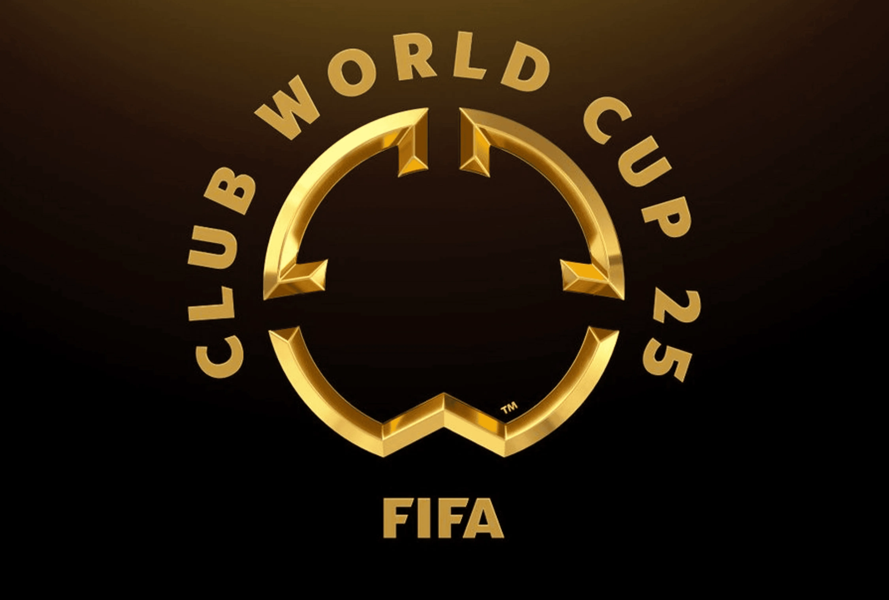

O que é o Mundial de Clubes?
O Mundial de Clubes da FIFA (ou apenas “Mundial de Clubes”) é um torneio internacional de futebol que reúne os clubes campeões de cada continente, além de um representante do país-sede. É organizado pela FIFA (Federação Internacional de Futebol) e serve para determinar o melhor clube do mundo em determinado ano.
Quem são os participantes?
Qual a importância do Mundial de Clubes?
1. Título máximo para clubes
É considerado o maior título que um clube de futebol pode conquistar, pois reúne os campeões de todos os continentes. Vencer o Mundial coloca o clube no topo do futebol mundial.
2. Valorização da marca e do elenco
- Maior visibilidade global
- Aumento do valor de mercado dos jogadores
- Interesse de patrocinadores e investidores internacionais
3. Prestígio histórico
Ganhar o Mundial dá ao clube e aos seus torcedores um status histórico, entrando para um grupo seleto de campeões mundiais, ao lado de gigantes como Real Madrid, Bayern de Munique, Corinthians, Milan, Barcelona, entre outros.
4. Retorno financeiro
- Premiações em dinheiro
- Aumento nas vendas de camisas
- Crescimento da base de torcedores internacionais
5. Intercâmbio entre continentes
Promove o encontro de diferentes estilos de jogo e culturas futebolísticas. É a única competição oficial onde um time da América do Sul pode enfrentar, por exemplo, um europeu valendo um título mundial.